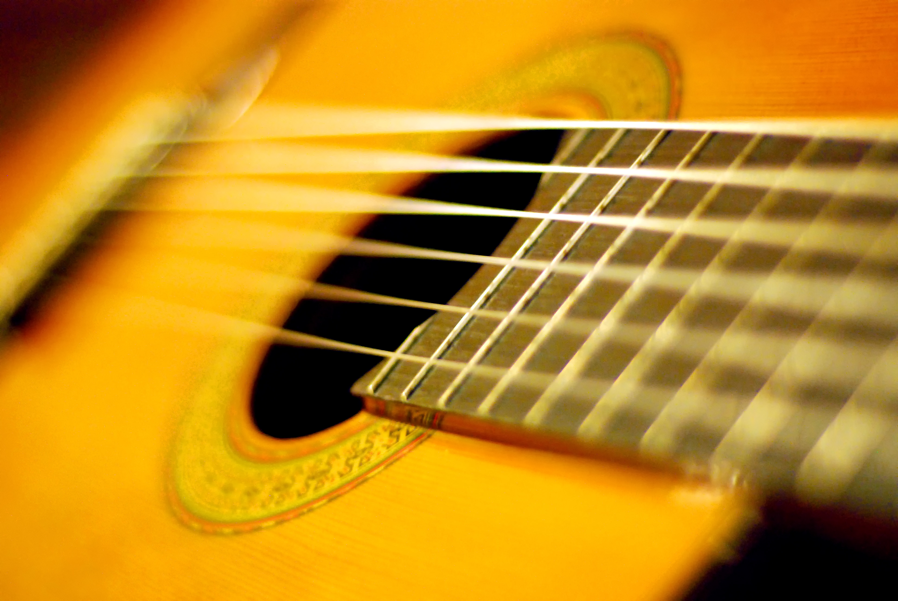
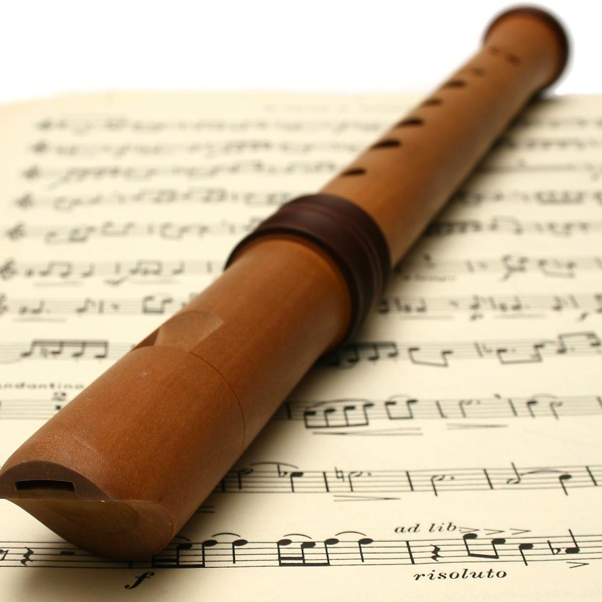
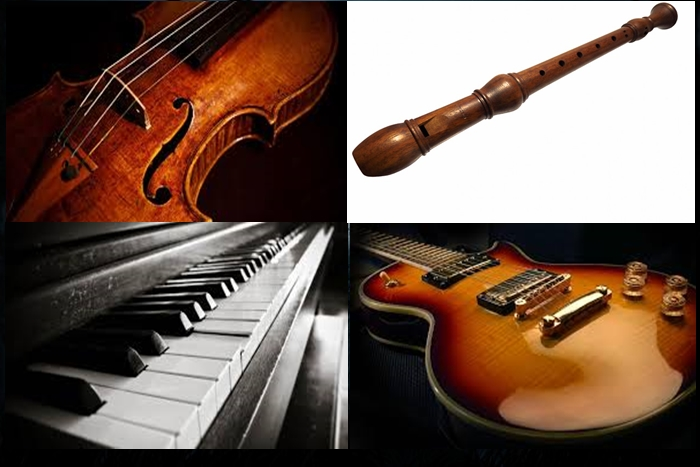
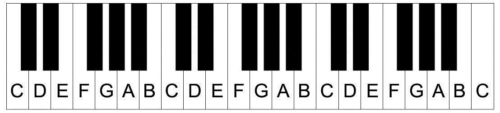
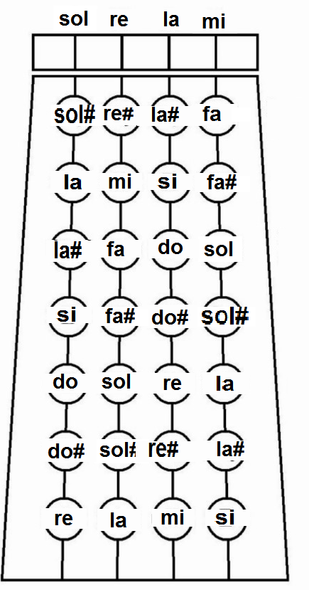

hoje vamos falar da música!Sou francis, sou multi-instrumentista e quero mostrar à vocês como aprender instrumentos fácilmente e se inspirar neles. Primeiramente, você deve aprender a se concentrar e dedicar pelo menos várias horas por dia, eu aconselho tirar 30 minutos de manhã,de tarde e de noite, assim conseguirá absorver uma grande linha de conhecimento e prática musical. tenha curiosidade, pesquise, leia métodos.. passe noites estudando, e verá a diferença.
*Compre um método básico do violão. Aprenda a cantar e tocar ao mesmo tempo,copie letras no site "letras.mus" , crie letras,aprenda acordes e começe a criar uma sequência de acordes, ex.: D,C e G. começe com acordes simples com letras simples pra decorar, e assim você aperfeiçoa durante o tempo.

*treinar a "mão direita" no violão é essencial,fazer dedilhados e batidas ajuda muito no treinamento, e depois treinar a "mão esquerda", como "digitação" para ganhar flexibilidade.
-Esse é o primeiro passo.
Como disse anteriormente, o músico precisa se preocupar em dedicar e ter curiosidade mas qual é o método certo pra aprender música? O maior segredo está no que você imagina e no que realmente quer, as pessoas são movidas por imaginações e planejamentos, elas fazem oque querem,oque planejam. Pretendem colocar em prática suas imaginações.
Exemplo: Um "rapper" imagina muitas mulheres lindas,carros luxuosos e roupas de marca, sua influência musical vai ser essa! quando ele pensar e imaginar essas coisas, como "músico" tudo isso pode se transformar em uma letra, que ao decorrer de sua empolgação vai começar a rimar e a tonalidade vai dar um ar de determinação e poder.
Assim também vai para um romântico: quando pensa muito em alguém, ele vai construir acordes tristes no violão, semelhante à - Dm,Am,Em e G... automaticamente, vai resultar numa letra que expressa oque ele sente por aquela mulher, então a facilidade de tocar, vem na empolgação,na emoção, sentimentos e pensamentos que por sua vez surgem as idéias.
Primeiramente, pense no que você mais gosta, no que mais deseja e imagine como se tivesse acontecendo,imagine uma história acontecendo, um som como trilha sonora vai surgir no sub-conciente e voila!
As pessoas tocam aquilo que elas gostam,isso é verdade. Mas elas gostam daquilo que elas tocam? nem sempre.Porque nem sempre, conseguem se espelhar no que gostam realmente e a verdade pra tudo isso é analisar pacientemente a música que ouvem,não só ouvir mas perceber cada detalhe, o ritmo,os pratos da bateria,a velocidade dos acordes,a quantidade de acordes na música,tudo isso conta.
E nunca devemos limitar nossos conhecimentos musicais. Sim! gostamos de determinados gêneros mas devemos vasculhar outras formas musicais diferentes para variarmos os nossos métodos de fazer música. E o treinamento é fundamental - treinar é quanto mais você errar,mais quer fazer certo até a última gota!É você tentar até conseguir, nem que fique horas só naquilo.Só vai depender de sua vontade,sua curiosidade de "conseguir" aquela meta.

Em todos os instrumentos, existe uma base de escala musical que compõe outras notas.
Por exemplo, o piano/teclado tem de "5 oitavas pra bem mais", a nota Dó é a primeira,que se localiza logo atrás de 2 teclas pretas (que são as notas "sustenidas").A partir desta primeira nota,a escala é formada com Ré,Mi,Fá,Sol,Lá e Si - "C,D,E,F,G,A e B". Você fazendo a contagem começando de Dó (C),apertando todas as teclas até chegar na nota desejada e assim, você localiza a nota.
A flauta é a mesma coisa apesar de ser apenas 1 oitava mas podem existir flautas com 2 ou 3, geralmente são poucas. Uma oitava é de Dó a Dó,também chamada de escala mas a diferença que uma escala pode começar de Ré a Ré,de Sol a Sol,etc... Na guitarra e no violino que são instrumentos referente a "clave de sol" (irei explicar mais tarde),o mesmo pode ser feito pra localizar as notas, sendo que, as notas mais agudas terão uma tarefa árdua pra fazer a contagem de notas até chegar na exata casa/espaço.Mesmo assim, com o passar do tempo, você se acostuma com essa contagem e devido a se acostumar também a pegar músicas com aquelas mesmas notas, um dia acaba decorando automaticamente a posição daquela determinada nota.

Analisando o desenho acima,está o primeiro Dó(C),o segundo,o terceiro e o quarto. A partir do Dó da 1ª oitava,vamos localizar o A,contando Ré,Mi,Fá,Sol e por último Lá(A),o Lá da 2ª oitava está na mesma posição (na segunda tecla branca abaixo no meio das tres pretas) e em todas oitavas o Lá vai estar nesta mesma posição.
A nota Ré(D) sempre vai estar nas teclas brancas entre as 2 teclas pretas,a nota Fá(F) sempre vai estar na tecla branca antes das 3 teclas pretas e assim por diante... O acorde Dó Maior vai ser formado com as notas C,E e G, a nota base C vai estar antes das duas teclas pretas, no teclado todo este vai ser o ponto de referência da nota base.
O acorde Si Maior vai ser formado com as notas B,D# e F#/Gb e sempre a nota base B vai ser a primeira tecla branca antes da Dó(C) e depois das tres pretas.Observe-se que as notas B e C estão juntas em todo teclado,menos no começinho justamente porque começa com C, então existe 3 posições desta no teclado.O segredo de aprender,é reparando nas teclas pretas (sustenidas) pra memorizar a localização das notas, pois elas vão está na mesma posição independente da oitava. Assim também se aplica para as notas E e F que sempre vão estar juntas.
As notas e acordes principais mais usados serão listados aqui para melhor a compreensão:
Apenas as notas E e B não tem "sustenidos" porque as notas na frente delas já são meio tom (1/2 tom), os sustenidos são notas de 1/2 tom (meio tom) que se encaixam nas teclas pretas. Na 1ª oitava,são 5 teclas pretas:C#,D#,F#,G# e A#, assim em ordem e na 2ª,3ª,4ª oitava é tudo a mesma ordem.As teclas pretas são usadas também para formar acordes menores e outras maiores,assim como o acorde Dó, os outros acordes são formados com 3 notas,3 dedos,pulando cada um 1 tecla branca mas nem todos vão ter a mesma posição, por ex.: os acordes maiores que usam teclas pretas são: D,E,A e B. Como usam 3 notas,a 2ª nota vai ser elevada meio tom, só a D que é abaixada meio tom.

Assim como o piano,o violino também pra localizar a nota deve-se começar a partir da primeira nota. A única diferença é que a localização começará a partir da corda solta,semelhante à guitarra que começará pela corda solta porém na guitarra você passa a descobrir a tônica dos acordes,automaticamente você saberá aonde se localiza a nota desejada. Se você quer achar a nota Dó(C) então começe a tocar a escala de Sol - Sol,Lá,Si,Dó,Ré,Mi,Fa#,Sol.E assim por diante, você achará a nota até em outras cordas e do mesmo jeito se aplica quando você quer achar uma nota em outra corda,sempre começe da corda solta tocando até a nota que quer encontrar, com o tempo você se acostuma a saber aonde está a nota. Logo acima uma ilustração mostra corretamente a sequência delas no violino.
| Tabela de composições musicais | ||||||||
| Ordem Nª | Tônica | Acordes | notas p/ cada Acorde | Compasso | Tempo | Definições | Definições Sec. | Intenção |
| 1ª | Dm | Dm,D#m,F,G | A,D#,F,B | Binário | 60 Bpm | melódico | Dissonante/Consonante | Suspense/tensão |
| 2ª | G | G,Em | G,D,G,D | Quaternário | 30 Bpm | Harmônico | Consonante | Tristeza/neutralidade |
| 3ª | Am | Am,C,G#m,A#m | C,B,G#,A,D | Ternário/Binário | 120 bpm | Harmonico/Melódico | Dissonante | Reflexão/maldade |
| 4ª | C | C,D#,C,A#, | C,D#,F,D# | Quaternário | 240 Bpm | Melódico | Consonante | Super-alegria/rebeldia |
| 5ª | Dm | Dm..Bdim..G..F.. | A.A#A.CB.GF.. | Ternário | 120 Bpm | Melódico | Consonante/Meio diss. | Teatral/depressivo |
A tabela acima mostra algumas composições que eu criei para um "gráfico musical",Contando com a Ordem numérica,tônica,acordes,notas,compasso,tempo,definições,definições secundárias e a intenção que a música traz. Cada música com uma característica e combinações diferentes. A 1ª música mostra uma batida lenta,porém na mesma contagem dos segundos,com 4 notas tocadas à cada 1 acorde, e 1 acorde tocado à cada 1 segundo,tons "melódicos" com uma mistura de dissonância e consonância dando assim um ar de suspense e tensão.A 2ª música é um compasso rápido,porém,a metade da lentidão da primeira música,com tons "harmônicos" como uma sinfonia e que agradávelmente traz um ar de tristeza e um equilíbrio neutro.A 3ª música já mostra tonalidades cruéis mas com um ar de reflexão como músicas de "drama", traz uma dissonância forte e um ritmo "destruturado" de dois compassos,com um conjunto de harmonia e melodia ao mesmo tempo, formando um ar de reflexão cruel.A 4ª música é muito rápida e agitada.Muito alegre,rebelde,dançante, porém tocada melodicamente e consonante, lembrando uma música Punk/rock n´roll.A 5ª música nos acordes mostra pontos que simboliza a batida ternária,então a cada 2 pontos são 2 batidas obedecendo o compasso, só que as notas estão com 1 ponto, então cada acorde contém 2 notas. E esta música é ternária tocada de forma melódica,com um "pouco" de dissonância e mais consonância. Ela constrói um clima muito triste e teatral.
Francis De Vil